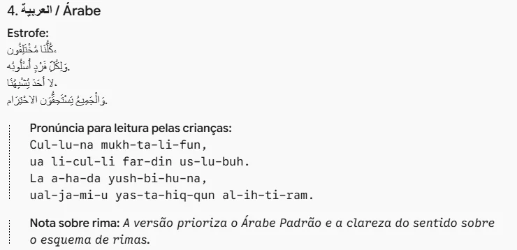
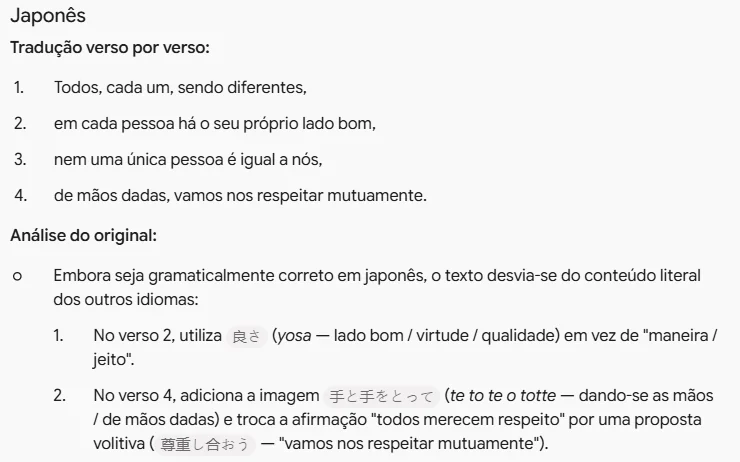

Cartazes em várias línguas
Traduza uma estrofe com o Gemini, confira cada versão pelo caminho de volta e monte os cartazes da mostra cultural
As diferenças
Mostra cultural da escola
Somos todos diferentes
Cada um tem o seu jeito
Ninguém é igual à gente
E todos merecem respeito
Rima: diferentes com gente, jeito com respeito
Comece pela estrofe
- O texto é seu: a ideia, as palavras e o tema da mostra. A IA só vai levá-lo para outras línguas.
- Em poesia, cada palavra foi escolhida pelo som e pelo sentido. Traduzir palavra por palavra costuma perder os dois.
- A rima quase sempre se perde em outra língua. Tudo bem: o que não pode se perder é a mensagem.
- Español
- English
- a que você descobrir
- Avañe'ẽ guarani
- Nheengatu
- Italiano
- 日本語 japonês
- العربية árabe
- Русский russo
- हिन्दी hindi
- Libras não se escreve: veja o aviso
Escolha as línguas
- Comece pelas línguas das famílias da sua escola. A criança que se vê no cartaz entende o tema da mostra na hora.
- Inclua uma língua indígena: o Brasil tem mais de 270, e quase ninguém sabe disso.
- Uma língua de outro alfabeto mostra, só de olhar, que existem muitos jeitos de escrever.
Libras é uma língua de sinais, com gramática própria, e não tem versão escrita para colar na parede. Para incluí-la, peça a quem sinaliza que grave a estrofe em vídeo e coloque um QR code no cartaz.

Abra o Gemini
- No computador ou Chromebook, com a conta @educa (institucional).
- Comece uma conversa nova. Vamos usar duas conversas neste tutorial, e o passo 6 explica por quê.
Estou preparando uma mostra cultural na escola com o tema "as diferenças". Quero traduzir a estrofe abaixo para fazer cartazes que serão colados pela escola e lidos por crianças de 6 a 11 anos e pelas famílias. Somos todos diferentes Cada um tem o seu jeito Ninguém é igual à gente E todos merecem respeito Traduza para: espanhol, inglês, guarani, árabe, japonês, russo e hindi. Regras: 1. Traduza o sentido, não palavra por palavra. O texto precisa soar natural para quem fala a língua. 2. Se a rima se perder, avise e dê prioridade ao sentido. Não acrescente ideias que não estão na estrofe só para rimar. 3. Se algum verso puder ser entendido de dois jeitos, diga qual sentido você escolheu. 4. Para cada língua, escreva o nome da língua nela mesma e em português, depois a estrofe. Nas línguas que não usam o nosso alfabeto, mostre também como se pronuncia, para as crianças lerem em voz alta. 5. No fim, diga em quais línguas a sua tradução é menos confiável e por quê.
Peça a tradução
- Conte para que e para quem é o texto: cartaz, crianças, famílias. Isso muda a escolha das palavras.
- "Traduza o sentido": sem esse pedido, a IA pode entregar uma tradução certinha que ninguém falaria daquele jeito.
- A última regra faz a IA dizer onde ela é mais fraca, em vez de entregar tudo com a mesma segurança.

Leia as traduções
- Antes de traduzir, o Gemini explicou o verso 3: "ninguém é igual à gente" virou "ninguém é igual a nós". Era isso mesmo.
- No fim, ele marcou o guarani e o árabe como menos confiáveis. São os primeiros a conferir.
- Repare no árabe: na tela, os pontos finais caíram do lado esquerdo. Copiar e colar escrita da direita para a esquerda pode desarrumar o texto.
Traduza para o português cada um dos textos abaixo, o mais literalmente possível, verso por verso. Não melhore, não corrija e não tente adivinhar o que o autor quis dizer. Se algum trecho estiver estranho, errado ou artificial na língua original, avise. …
Peça a volta
- A volta é o caminho contrário: cada tradução traduzida de novo para o português. Se a ideia voltar inteira, é bom sinal.
- Abra uma conversa nova. Na primeira, o Gemini já leu a estrofe e tende a "acertar" a volta de memória.
- Troque as reticências pelas traduções, sem a estrofe em português.

Compare com o original
- Palavra diferente é normal: "jeito" voltou como "maneira" no espanhol. Ideia diferente é sinal de problema.
- O japonês voltou com "de mãos dadas", que não está na estrofe. A volta também achou um erro de grafia no árabe e um "precisam de respeito" no guarani.
- Achou um verso torto? Volte à primeira conversa, diga o que mudou e peça outra versão daquele verso.
Antes de imprimirQuem confere
Exemplo fictício
Confira com quem fala a língua
- A IA aprende com o que está escrito na internet. Língua com pouco texto publicado, como o guarani e o nheengatu, sai com mais erro.
- Procure uma família da escola, a professora de inglês ou de espanhol da rede, uma comunidade ou associação da língua.
- Convidar alguém para conferir também é parte da mostra: a família vira coautora do cartaz.
A volta não prova que a tradução está certa: ela só mostra se a ideia se perdeu. Em língua indígena, a IA pode errar nas duas direções. Nenhum cartaz vai para a parede sem alguém que fala a língua ter lido.
Agora me ajude a montar os cartazes, um para cada língua, incluindo o português, em folha A4 na vertical. Para cada cartaz, organize: - Título: o nome da língua escrito nela mesma, em letra grande, e embaixo o nome em português. - A estrofe na língua. - A pronúncia, quando a língua não usa o nosso alfabeto. - Uma curiosidade sobre a língua ou sobre quem a fala, em uma frase curta que uma criança de 8 anos entenda. - Cuidados na hora de montar: direção da escrita, que tipo de fonte mostra as letras corretamente e o que não pode ser cortado ou separado. Não use bandeiras de países para representar as línguas.
Peça o cartaz
- O nome da língua escrito nela mesma é o primeiro presente para quem fala: ver a própria língua do jeito certo.
- Árabe e hebraico se escrevem da direita para a esquerda. Japonês, russo e hindi precisam de uma fonte que tenha aquelas letras, senão aparecem quadradinhos.
- Sem bandeiras: uma língua não é um país. O espanhol e o árabe são falados em cerca de 20 países cada, e o guarani no Brasil, no Paraguai, na Argentina e na Bolívia.
Se a volta achou erros, liste-os antes deste comando e peça a correção. Depois, confira de novo: ao corrigir o japonês, o Gemini enfiou no último verso uma palavra em tailandês ("และ"). E desconfie das curiosidades: "pipoca" e "jacaré", que ele disse virem do guarani, vêm do tupi.
Veja os cartazes
- Interativo: toque em uma língua para ver o cartaz.
- No árabe, o texto começa pela direita. A pronúncia, embaixo, deixa qualquer criança ler em voz alta.
- Em vez de sete dicionários e uma tarde inteira, você teve um rascunho em minutos e uma lista de quem chamar para conferir.
O cartaz do guarani ainda não está pronto: falta alguém que fala a língua ler. A IA adiantou o trabalho, mas quem garante a tradução é gente.